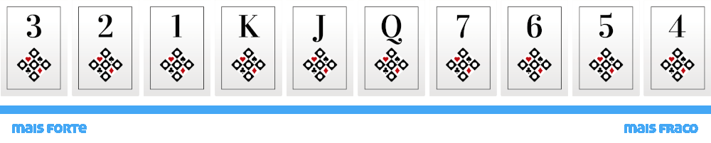
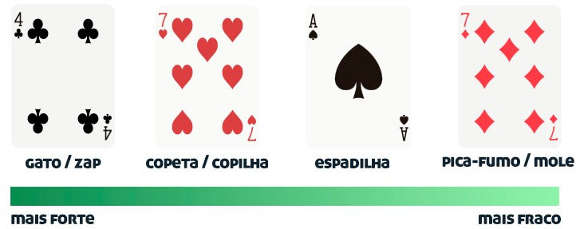

Certeza que voce ja viu seus colegas de escola ou familiares jogando truco e ja quis jogar mas nunca procurou atrás de aprender, mas agora que esta aqui, irei te ensinar a jogar o truco mineiro(digamos que o truco certo). O jogo é mais facil do que aparenta, ele é formado por 40 cartas com 13 cartas tendo uma ordem de poder especifica

Na imagem acima esta sendo demonstrada exatamente a ordem des poderes das cartas, para jogar uma partida voce devera ter em mente essa ordem, se imagine em uma partida contra outra pessoa e ela manda um 6 de paus, para fazer um ponto voce pode mandar qualquer cartas acima do 6 que voce tiver, como 2 de ouros assim ganhantido um ponto, porem ainda existem algumas coisas que voce precisara saber

Acima esta sendo mostrado as manilhas, se voce reparou na imagem sobre a ordem de poder, o 3 é a carta mais forte do jogo, porem existem excessoes que o superam que sao as manilhas, elas ganham de todas as cartas do 3 para baixo
Dentro das manilhas, tambem existe uma ordem de poder, que é seguida de acordo com a imagem sendo as cartas da esquerda mais forte que as da direita
É importante entender que, diferente da ordem de poder de todas as cartas em que um 5 pode ter diferentes naipes, e continuar tendo o mesmo "poder", uma carta como 7 de copas( 7 com coraçao) tera força que supera um 3, mas apenas esse 7 com esse naipe, um 7 de paus (7 com a arvorezinha) continuara sendo mais fraco que a Q e mais forte que 4,5, e 6
Certeza que essa é a parte que voce mais esperou, bom vamos la que isso nao vai ser pouca coisa O jogo é jogado em rodadas, a equipe que atingir primeiro a pontuação pré-determinada (geralmente 24 pontos) é a vencedora. Cada rodada é composta por três fases: o desafio, a resposta e a jogada
Desafio: O jogador à direita do distribuidor começa a rodada desafiando os oponentes, anunciando a quantidade de pontos que ele acredita ser capaz de fazer com as cartas em sua mão. Essa quantidade pode ser um número fixo (como 2, 3, 4) ou uma jogada especial, como "truco", "seis", "nove" ou "doze". O desafiante pode aumentar a aposta, caso contrário, a fase passa para o próximo jogador.
Resposta: Os jogadores da dupla adversária têm a oportunidade de aceitar o desafio, aumentando a aposta ou desafiando de volta. Se um jogador desafia, a rodada termina imediatamente, e a dupla desafiadora ganha 1 ponto. Se a aposta é aumentada, a fase retorna ao desafiante original para uma nova decisão.
Jogada: Se o desafio for aceito, a fase da jogada começa. O jogador que fez o desafio é o líder e joga a primeira carta, seguido pelos outros jogadores em sentido horário. Cada jogador deve tentar vencer a rodada jogando uma carta de valor mais alto na mesma figura (copas, espadas, ouros ou paus) ou uma carta de valor qualquer da figura de trunfo, que é determinada no início de cada partida. Se um jogador não tem uma carta para vencer a rodada, ele pode blefar, jogando uma carta menor e tentando convencer os oponentes de que tem uma carta maior na mão. O jogador vencedor da rodada ganha pontos para sua dupla.
A primeira rodada de truco valera sempre 2, com possibilidade de aumentar a pontuaçao pedindo truco, seis, nove ou doze, ao pedir "truco" a pontuação da partida dobrara para 4, se a partida ja valer 4 voce ou seu inimigo pode pedir "seis", que aumentara os pontos da partida para 6, se a partida ja valer 6 pode pedir "nove" e a partida valera 8, e se a partida valer 8, voce podera pedir "doze" e a partida valera 12 (mas tome cuidado ao pedir doze, porque se voce ou sua dupla nao for capaz de ganhar 2 rodadas perdera a partida em instantes)